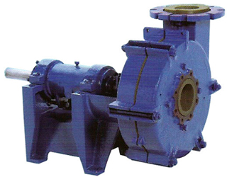

ECC

END SUCTION CENTRIFUGAL ANSI B73.1 CHEMICAL PROCESS & GENERAL REFINERY SERIES PUMPS
MATERIAL COMBINATIONS OFFERED
SS 316, SS 304, CD4 MCu, Haste alloy B & C, Alloy - 20, Super duplex steel & Any other alloys of steel.
SALIENT FEATURES
- High Performance and efficiency
- Semi -Open Impeller
- Gland Packing / Mechanical Seals
- Standard Oil splash Lubrication
- Fixed / Variable speed drive
- Back pull out design
- Flange-ANSIB16.5
APPLICATIONS
- Handling Organic & Inorganic
- Chemical & Process Transfer
- General Refinery Services
- Erosive/Corrosive Liquors
- Demineralised Water
- Condensates
OPERATING DATA
- Max. Working Pressure - 10/16 (bar)
- Max. Flow rate - 1000 mVhr
- Max. Total Head - 120 mtr
- Max Solid Size Dia - 50mm
- Min/Max Speed - 970/1480/2900rpm
VERTICAL - ECCV, ECPV, ECHV & ECRV SERIES
ECCV
CHEMICAL/ PROCESS PUMPSThe ECCV assures high performance with unmatched efficiency and increased reliability
APPLICATIONS
- Non API 610 Chemical & Process Applications
- General Refinery
- Erosive / Corrosive Liquors
ECPV
PAPER / PULP & PROCESS PUMPS
ECPV is designed to deliver high performance with high efficiency and increased reliability, this series reduces maintenance cost and downtime.
APPLICATIONS
- Food & beverage Industry
- Corrosive & Non Corrosive Effluents
- Sugar Industries
ECHV
HARD METAL SLURRY PUMPS
The ECHV is manufactured to retain high performance with highly abrasive erosive slurry and sludge handling capabilities.
APPLICATIONS
- Power generation & Steel
- All abrasive slurries & sludges
- Mineral & Ore Processing
- Beach (Sand) Recovery & Dispersal
- Coal & Ash Slurries
- Metal waste separation / Recovery
ECRV
RUBBER LINED SLURRY PUMPS
ECRV series is of highly efficient pumps that guarantees high performance and increased.
APPLICATIONS
- Abrasive Chemicals & Process Liquors
- Solids Entrained Liquors
- Lime & Clay Slurries
ECH / ECR
END SUCTION CENTRIFUGAL HARD METAL/RUBBER LINED SLURRY PUMPS
MATERIAL COMBINATIONS OFFERED
Hichrome (28 % Cr, 600 - 650 BHN), Nihard & Rubber
SALIENT FEATURES
- Greater wear life
- Closed / Open Impeller
- Tangential Discharge Casing
- Removable Suction & Rear Casing Liners
- Variable discharge nozzle positions
- Fixed / Variable speed drive
- Back Pull-out design
OPERATING DATA
- Max.Working Pressure - 16 (bar)
- Max.Flow rate - 2500 rnVhr
- Max.Total Head - 100 mtr
- Max. Solid Size Dia - 126 mm
- Min/Max Speed - 720/960/1450 rpm
- Max. Temperature 180°c
APPLICATIONS
- All Abrasive Slurries & Sludges
- Mineral & Ore Processing
- Cyclone Feed & Under-flow
- Tailings Disposal
- Lime & Clay Slurries
- Classifier & Thickener Under-flow
- Dewatering, Wash down & Sluicing
- High Density Slurries & Sludges
- Coal & Ash Slurries
- Beach (Sand) Recovery
ECP
END SUCTION CENTRIFUGAL PAPER / PULP & PROCESS PUMPS
MATERIAL COMBINATIONS OFFERED
SS 316, SS 304, CI & Any other Alloys of Steel
SALIENT FEATURES
- High Performance and efficiency
- Open Impeller
- Gland Packing / Mechanical Seals
- Standard Oil splash Lubrication
- Fixed / Variable speed drive
- Back Pull-out design
OPERATING DATA
- Max. Working Pressure - 10 (bar)
- Max. Flow rate - 3000 mVhr
- Max. Total Head - 100 mtr
- Max Solid Size Dia - 95mm
- Min/Max Speed - 720/960/1450 rpm
APPLICATIONS
- Food & beverage Industry
- De-watering & De-inking Liquors
- Corrosive & Non-corrosive liquors
- Chemical/Process Effluents
- Sugar Industries
- Power generation & Steel
- Handles Paper & Pulp stock, Consistencies - Upto 8 %
- Brewing & bottling plant Liquors